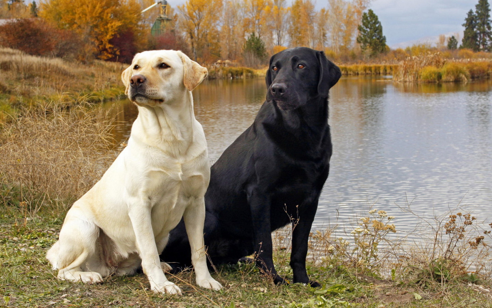

Pochodzenie:
- Rasa Labrador Retriever pochodzi z Nowej Fundlandii w Kanadzie.
- Wyhodowano ją jako psa myśliwskiego do pracy zarówno na lądzie, jak i w wodzie, zwłaszcza przy polowaniach na kaczki.
Wygląd Fizyczny:
- Labrador to średniej wielkości pies o muskularnej budowie.
- Ma krótką, gęstą sierść, gładką na dotyk, z odpornym na wodę podszerstkiem.
- Charakteryzuje się głową o umiarkowanej wielkości, szerokim pyskiem i wyraźnymi oczami.
Kolor Sierści:
- Najczęściej występujące kolory sierści to czarny, czekoladowy i żółty.
- Żółty może przybierać różne odcienie, od jasnego kremowego do złotego.
Charakter i Temperament:
- Labradory są znane ze swojego przyjaznego i łagodnego charakteru.
- Są bardzo inteligentne, posłuszne i łatwo uczą się poleceń.
- Doskonale sprawdzają się jako psy rodzinne, są przyjazne wobec dzieci i innych zwierząt.
Aktywność Fizyczna:
- To energiczne psy, które potrzebują regularnej aktywności fizycznej.
- Bardzo lubią zabawy, bieganie i pływanie.
Zastosowanie:
- Labradory są uniwersalnymi psami, znakomicie sprawdzającymi się w roli psów myśliwskich, a także jako psy przewodniki dla niewidomych, psy policyjne, psy ratownicze i terapeuty.